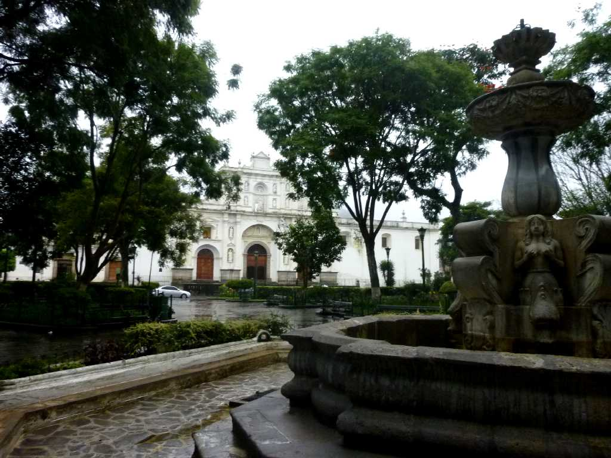
Catedral Fuentes Parque Central Antigua
アンティグアの中央公園から大聖堂を望む
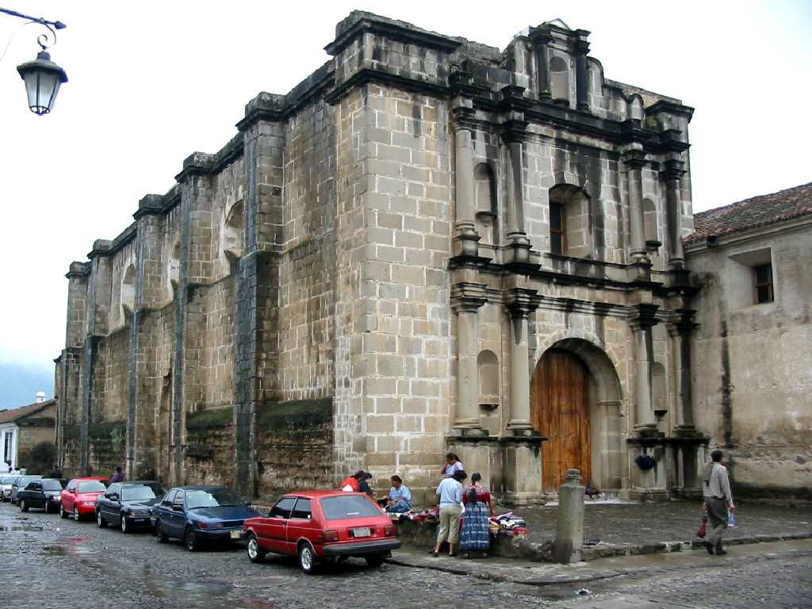
Iglesia y convento de las Capuchinas Antigua
アンティグアは１５４３年依頼グアテマラの首都として栄えたが１７７３年のサンタマルタ大地震により街が崩壊したので首都を現在のグアテマラシティーに移した
September 30 2010 Capuchinas
カプチナス修道院は１７３６年に建設されたが大地震により一部崩壊した
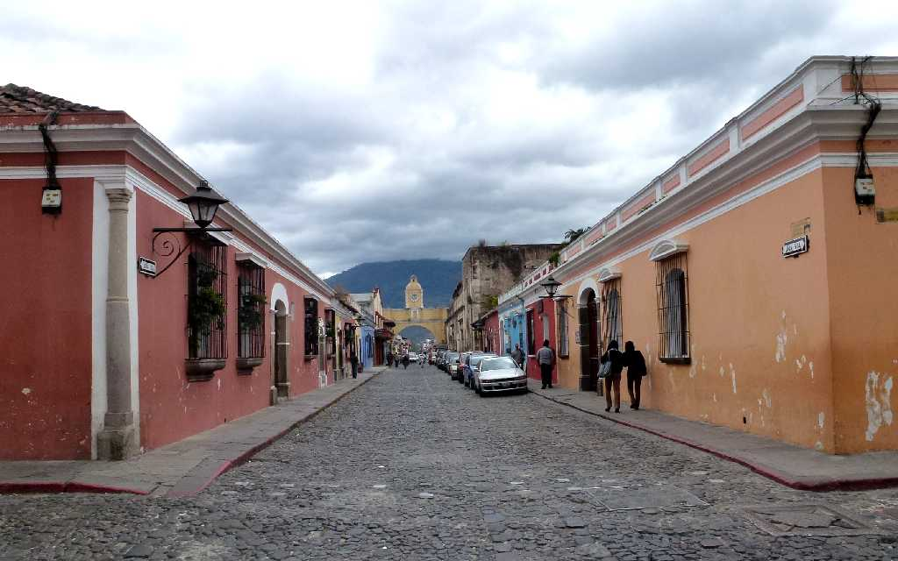
Santa Catalina Arch Antigua
８０日間世界一周クルーズ以来３年ぶりの再訪問 １８世紀に創られたバロック様式のサンタカタリナアーチ
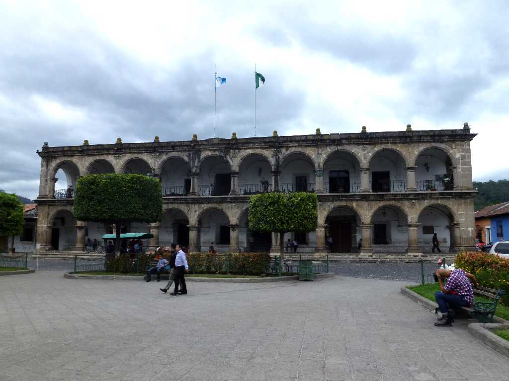
Palacio de los Capitanes
１５４９年に創られた王宮
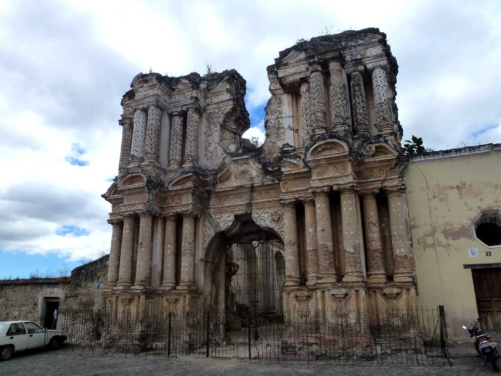
Iglesia El Carmen
グアテマラシティーに遷都させた１７７３年に起きたマグニチュード７.5の強烈な大地震により廃墟となってしまったカルメン教会
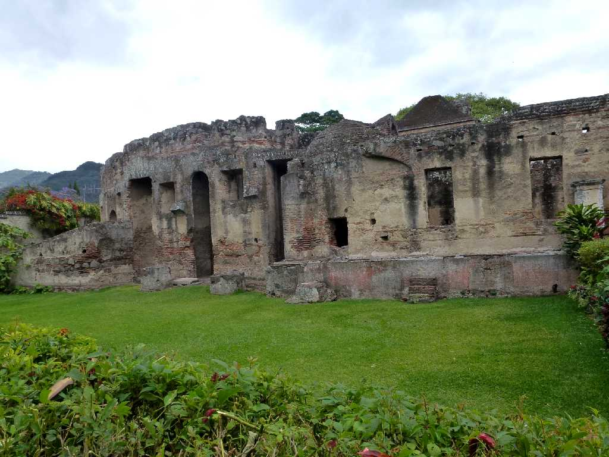
Iglesia y convento de las Capuchinas
再訪問で修道院を周る
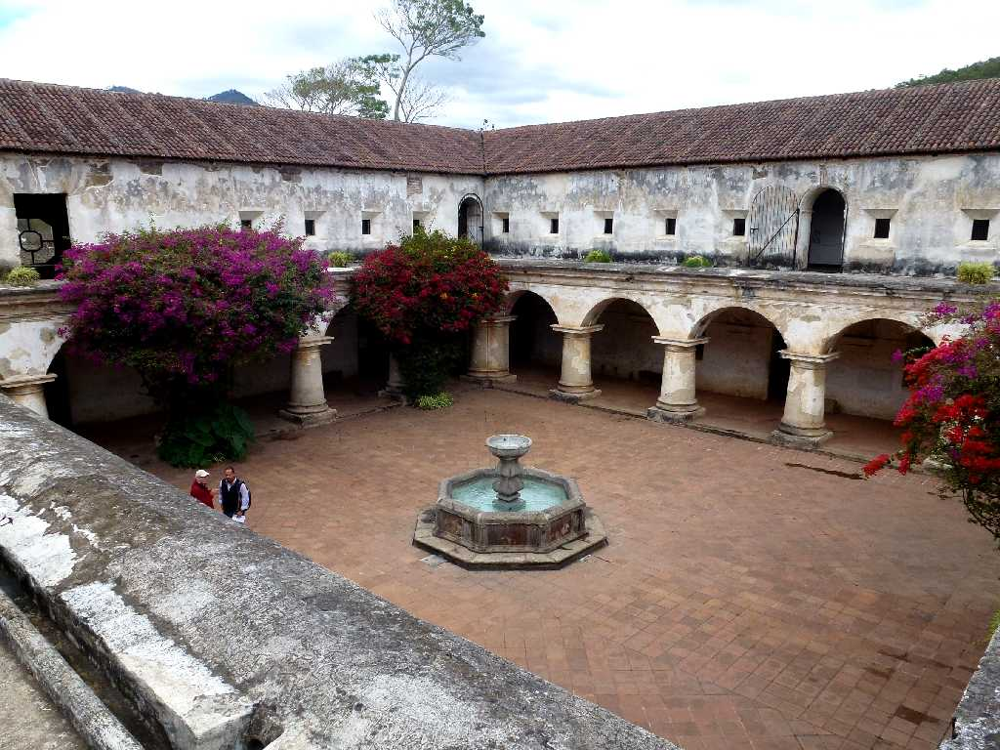
Iglesia y convento de las Capuchinas
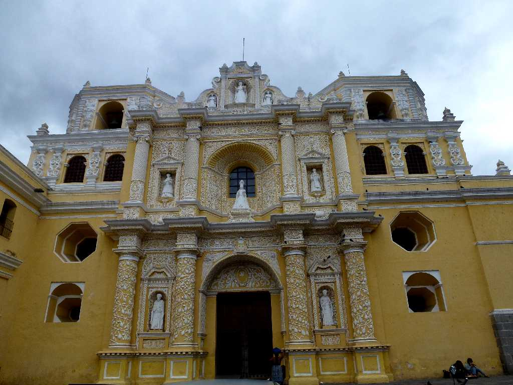
Igleisia La Merced
１７６７年に創られたバロック様式のカトリック教会
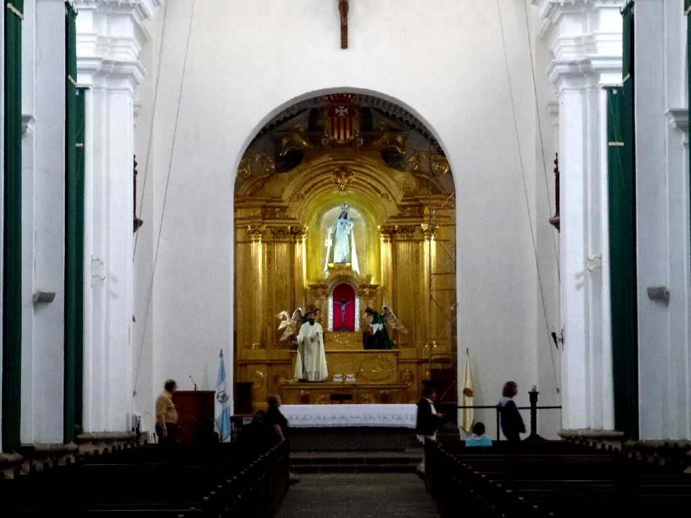
Altar Igleisia La Merced
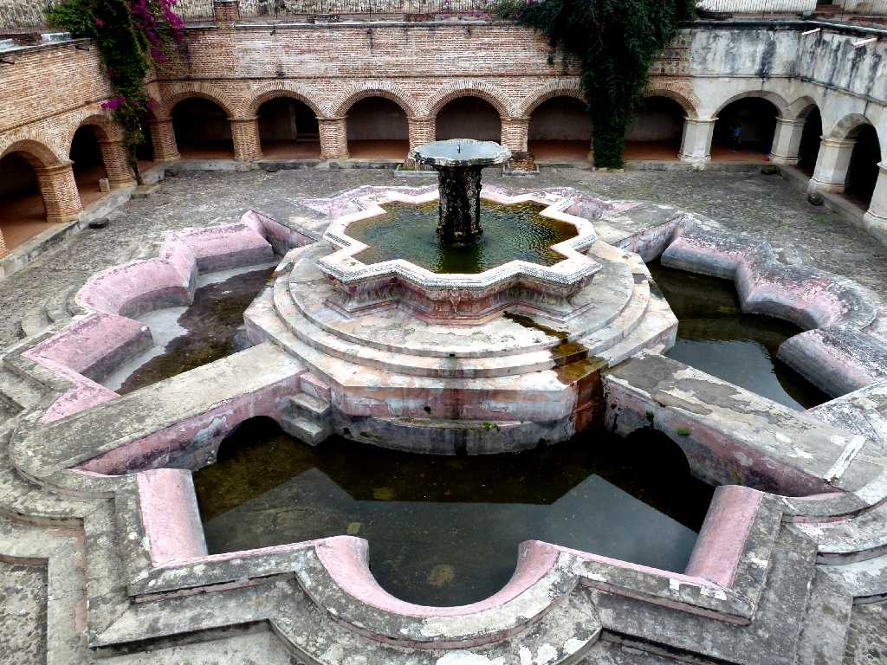
Fountain Igleisia La Merced
中米最大の噴水
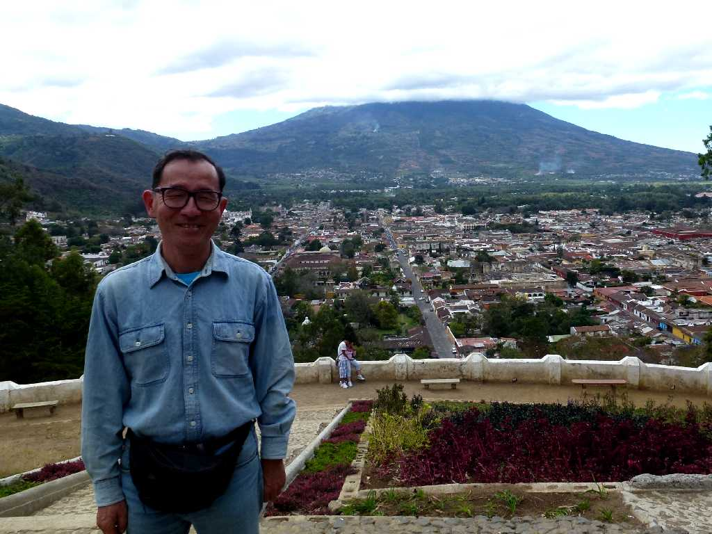
February 1 2013 Cerro de La Cruz Antigua
十字架の丘よりアンティグアの街並みを望む